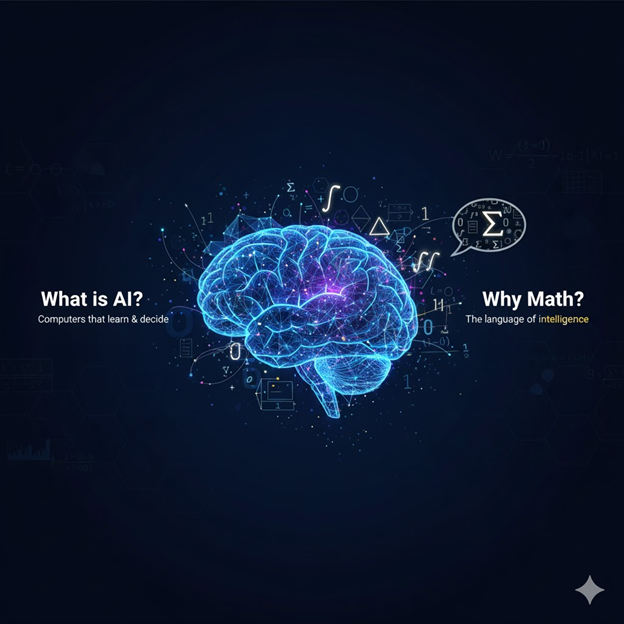
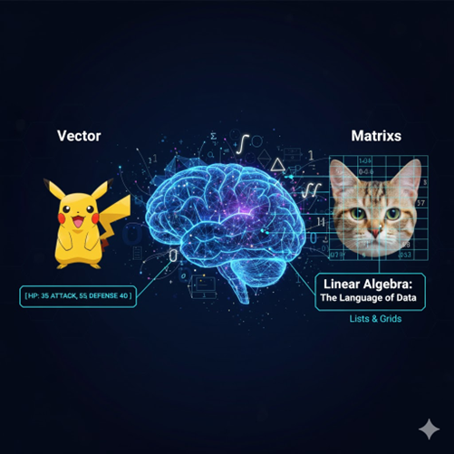
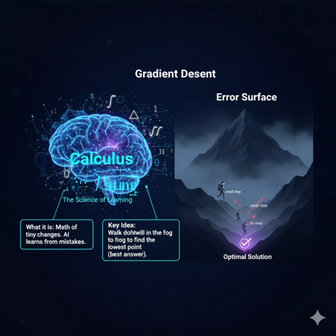
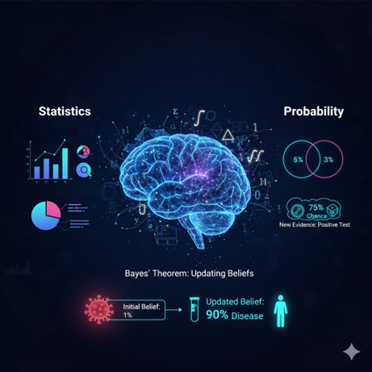
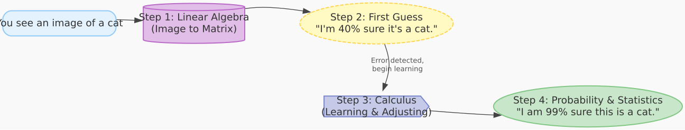

Press the arrow keys to navigate

Image: Brain with math symbols
AI helps computers learn and make smart decisions, just like humans.
Math is the language computers use to "think." It gives them a set of rules to understand the world.
You can't bake a cake without a recipe. Math is the recipe for AI.

A way to organize information into lists and grids so a computer can work with it. Everything in AI, from your selfie to this sentence, is turned into numbers.
The building blocks of data in AI.
Just a list of numbers. Think of a character's stats in a video game.
Example: Pikachu's stats could be a vector: [HP, Attack, Defense] → [35, 55, 40]
A grid of numbers (a list of vectors!). This is how computers see images. Each number is a pixel's color and brightness.
It allows a computer to process huge amounts of data (like millions of pixels in a photo) all at once, making things like facial recognition possible.
Describe a character with:
How would you write this as a vector?
[9, 5, 0]
Create a 3x3 matrix for a simple black and white cross. (1 = Black, 0 = White)
⚫⚪⚫
⚪⚪⚪
⚫⚪⚫
[
[1, 0, 1],
[0, 0, 0],
[1, 0, 1]
]

Calculus is the math of tiny changes. In AI, it's used to help the model learn from its mistakes and get better over time.
Imagine you're on a foggy mountain and want to get to the very bottom.
You can't see far, so you take a small step in the direction that goes down the most.
You repeat this over and over until you can't go down anymore. That's Gradient Descent.
The "mountain" is the AI's error. The AI uses calculus to find the "steepest downhill direction" and adjusts its settings (takes a step) to make its error a little smaller.
An AI is guessing a number. The correct answer is 7.
Which attempt had a bigger error?
Attempt 1 had the bigger error (5 vs 2).
After guessing 2, it should guess higher.
After guessing 9, it should guess lower.
Calculus helps the AI do this automatically!

Statistics: Collecting and analyzing data to find patterns.
Probability: The chance of something happening. Helps AI deal with uncertainty.
A rule that helps an AI update its beliefs when it gets new information.
Initial Belief: The probability of a rare disease is low (1%).
New Evidence: The person gets a positive test result.
Updated Belief: Bayes' Theorem combines both to calculate a new, more accurate probability.
An AI has learned:
A) "You are the lucky winner!"
B) "Hey, it's Sarah, check this out."
Answer: A. The AI uses probability to make this smart guess based on statistical patterns.

Turns the image into a giant matrix of numbers (pixels).
The AI makes a first guess: "I'm 40% sure it's a cat."
Helps the AI see it made an error. It uses Gradient Descent to adjust its settings to be a little bit better at recognizing cats.
After millions of training examples, it says: "Based on all the patterns I've learned, I am 99% sure this is a cat."